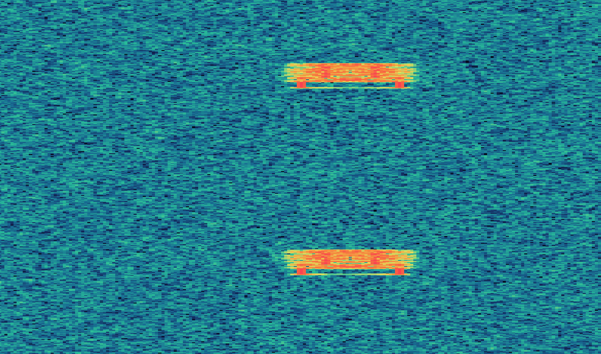

Welcome to NETSAT
Netsat is a shared internet virtual satellite you can use to learn about digital signal processing.

Why Netsat?
Digital signals power the digital world, yet most programmers know almost nothing about them. Netsat offers a simple platform for anyone to learn on. No need for expensive SDR hardware or antennas.
Ok, but what actually IS netsat?
Netsat is a websocket server that aims to emulate the experience of receiving a satelite. Connect, and "real" radio samples will start streaming to your computer. What you do with them from there is up to you.
Netsat is also a shared experience. This means that the same samples are broadcast to everyone at the same time. Just like a real satellite, what you see is what everyone else sees. In practice this doesn't mean much now, but in the future there might be events happening to our satellites that you could be one of the first to discover and share!
What if I don't know anything about signal processing?
I'm not going to pretend I could write anything nearly as good as the resources that are already out there. Instead, I'll link to one of my favorites, the excellent PySDR by Dr Marc Lichtman.
Check out PySDR hereReady to begin? Try connecting to one of our satellites below using your favorite programming language.
ALPHA
Alpha, our first satellite, is ideal for beginners. It is designed as a simplified model of a real satellite, minus a lot of the annoying bits. Start here if learning about DSP for the first time.
Sample rate: 3200 samples per second
ws://alpha.netsat.space